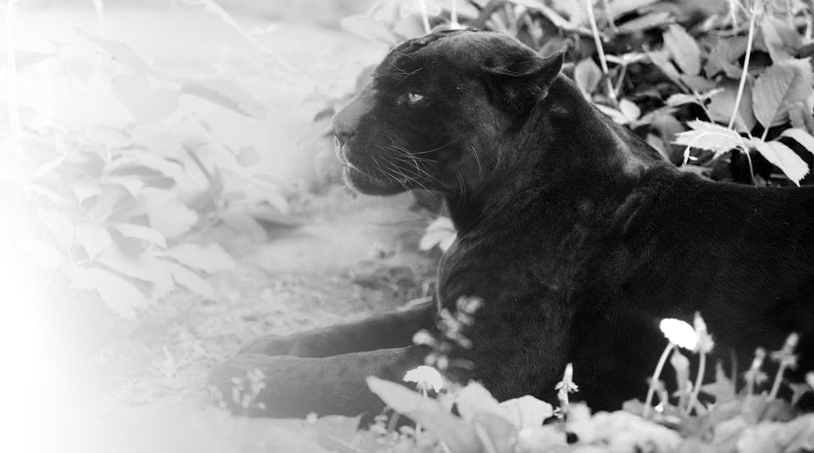
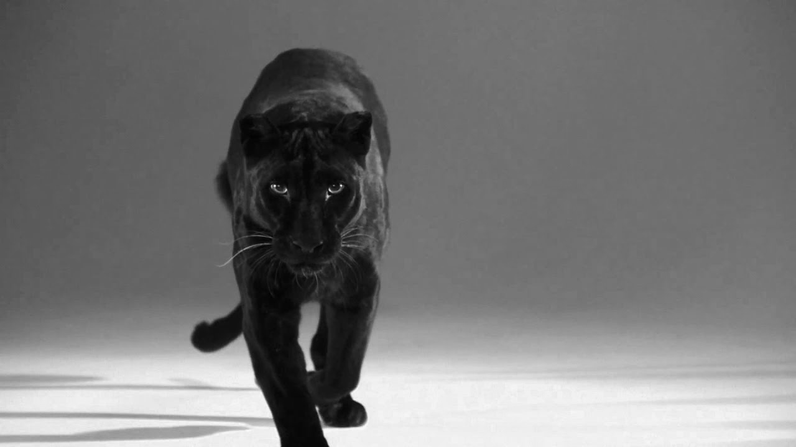
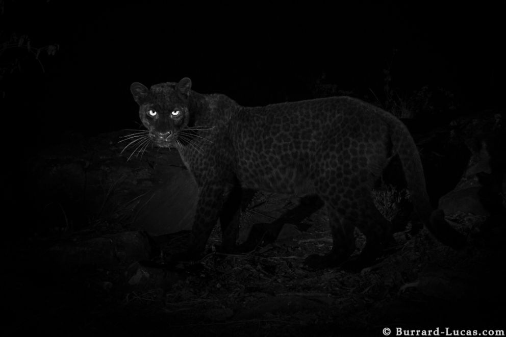
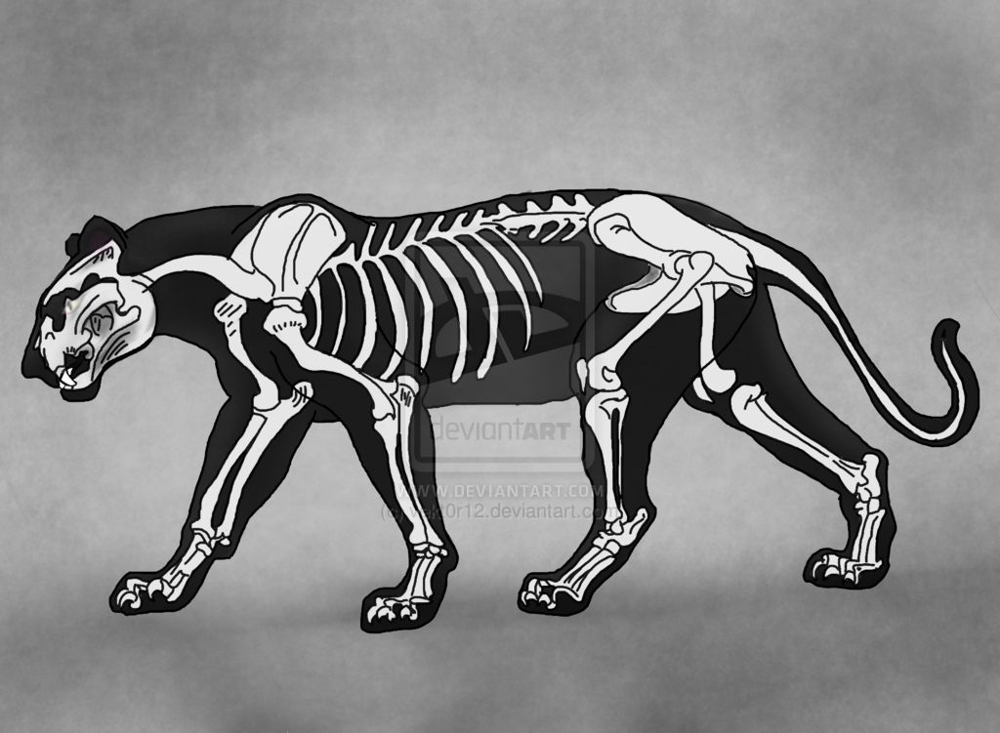
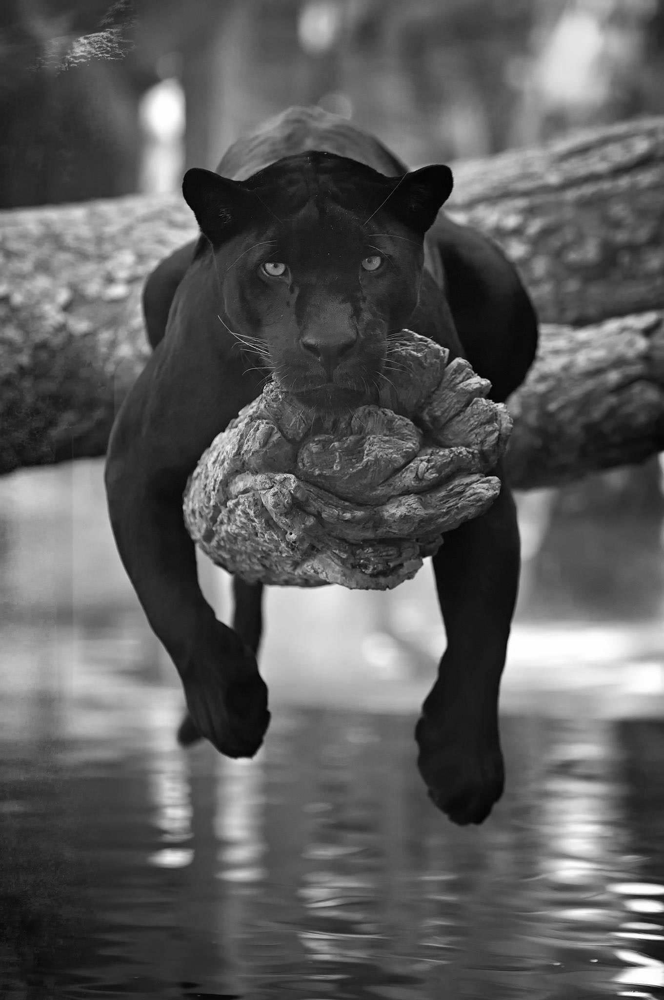
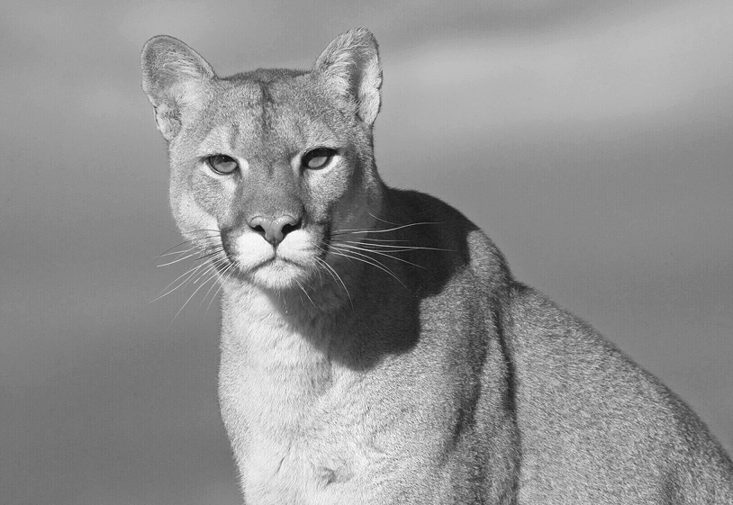
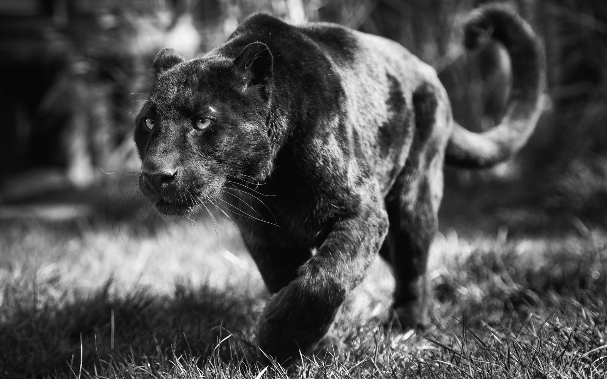
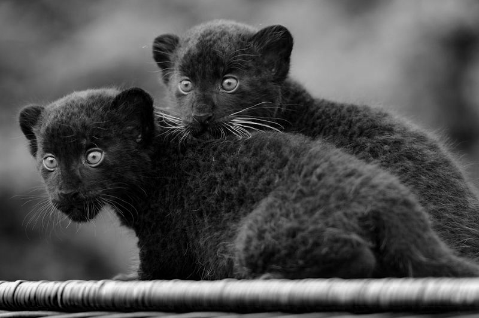
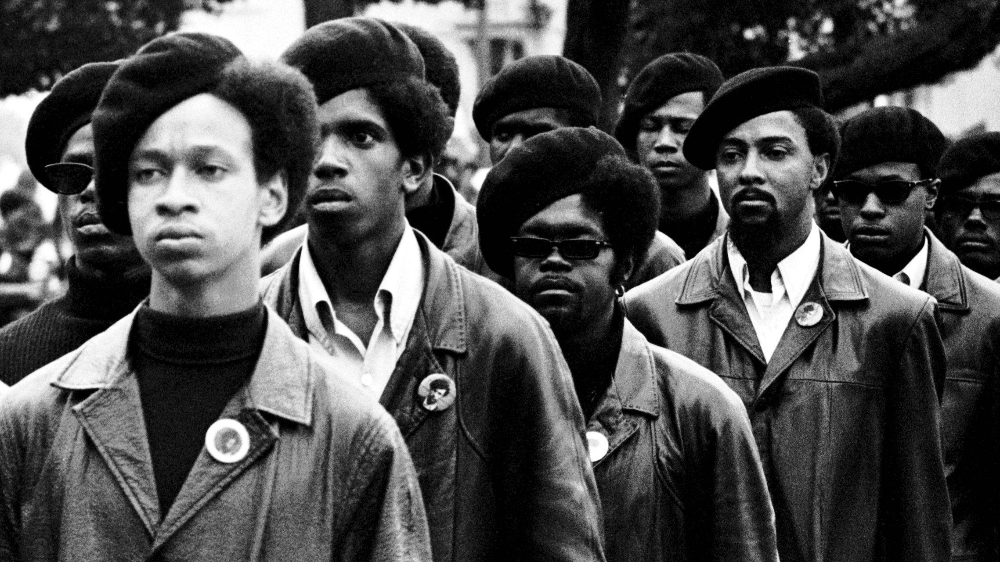

The Black Panther
Description
The jaw structure creates a powerful grip for the Panther.
The Black Panther is not an actual species, but they are a large feline cat that are in the Jaguar/Cougar family, but their dark shiny coats make them totally different because the don't have spots. The Panthers have small heads,but a strong jaw with emerald green eyes. They are one of the largest group of felines in the world, and they are also one of the groups that can roar. Black Panther’s are native to Africa, Asia, and the Americas.
Leopards
Leopards are a sub-category of Panthers. They are large animals that lay in trees and can haul their food up to the branches they lay on, which helps from scavenging hyenas to take their food. They also hunt from the top of trees and have a deadly pounce. These large cats hunt at night and prey on deer, pigs, and antelope, and they also love to be in water so they can hunt fish or crab. They are also show a threat to humans and settlements because they will hunt and attack domesticated animals and occasionally humans.
Rare sighting of Black Leopard.
Biology
Their shoulder blades have a strenghth to dip low.
The Black Panthers are amazing climbers because of the strong shoulder blades even having special attachment for strong climbing muscles. They have small heads with a powerful jaw. They have strong hind legs because they can jump from the top of tree branches to catch prey. They are highly skilled swimmers, so they need muscles to work out in. They need to have an agilre body because they move swiftly across the night.
Ecology
The jaw structure creates a powerful grip for the Panther.
They breed at different time of the year. Panther’s attract females by the scent of urine, and they are in heat for 6-7 days, and when they meet the males will spend the time with the female eating and breeding than the female is pregnant for 3.5 months.
Cougars
Cougars are mostly in the America’s they were once a roaming cat that roamed America but were eliminated from the Midwest because they would prey on the farms. They require a lot of room to live and are shy animals but will attack on occasion. The cougars are all over the America's and are one of the largest groups. Their fur can get very dark black and short from their other feline Panthers.
Behavior

Swimming in the river.
The Black Panthers are nocturnal animals that like to lounge around all day. They have home ranges, which are like neighborhoods among the animals, and some can overlap with female range. They mark their territory by clawing and urinating. They spend their time swimming and cooling off. They are very recluse animals that like their privacy.
Taxonomy
The scientific name for panthers are, Panthera pardus, They are mammals who are carnivores. They are about 4.25 to 6.25 feet tall and their tales are 4.5 feet long. They can weigh 66 to 176 pounds. They are equivalent to a 6-ft male person. They hav many large feline cats a part of this class of animals. Those including Leopards, Cougars,Jaugers, and Pumas.
Reproduction
The litters consist of two to three cubs, but sometimes there can be up to six. They are born with spots and as they grow older the spots fade into their fur, and their eyes aren't open until ten days after birth. The mother stays in the den with the cub as they feed from her milk but are left alone so she can hunt so they are very vulnerable at this time.
Human Relationship
Large black panthers.
Black Panthers have a big relationship with humans becasue they signify strength, sexyness, and power. They have helped organizations lead and have also been made into a superhero. They are hunted by humans because of their shiny dark fur. They are hunted and poached. The Black Panthers have been given the name the ghost of the jungle because of how mysterious they are, and that's why many people want them to be a symbol.
The Black Panthers
The Black Panther Party.
The Black Panther movement was about a civil rights organization in the 60's who were trying to seek justice for the rights of African American across the United States. They were a revolution and a political party trtying to show the people that they were people who deserved rights and justice. They had many riots and marches to showcase their stance.
Black Panther the movie
The 2018 movie of the year.
Marvel Studios’ “Black Panther” follows T’Challa who, after the death of his father, the King of Wakanda, returns home to the isolated, technologically advanced African nation to succeed to the throne and take his rightful place as king. But when a powerful old enemy reappears, T’Challa’s mettle as king—and Black Panther—is tested when he is drawn into a formidable conflict that puts the fate of Wakanda and the entire world at risk. Faced with treachery and danger, the young king must rally his allies and release the full power of Black Panther to defeat his foes and secure the safety of his people and their way of life(Disney).